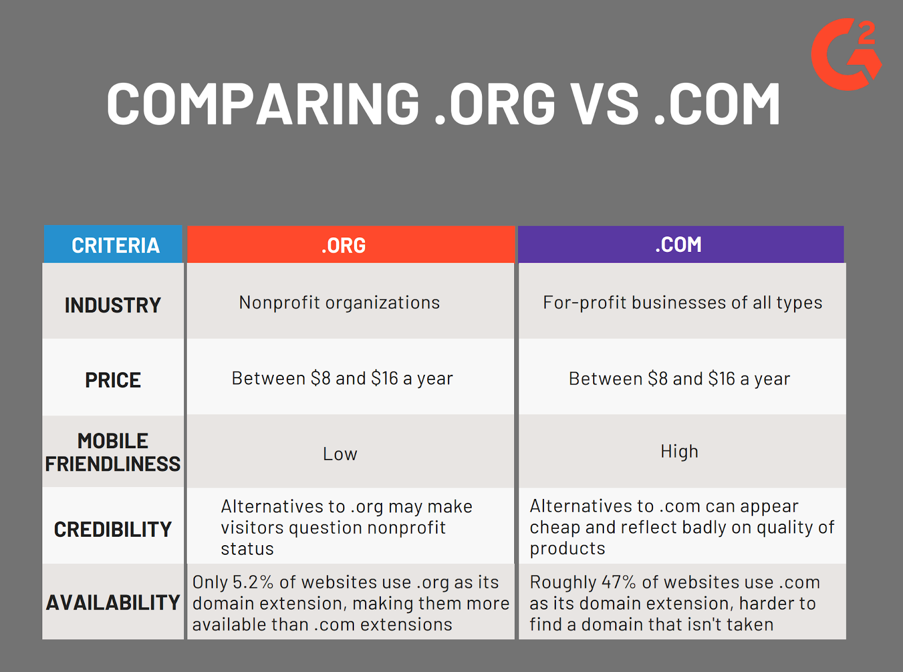
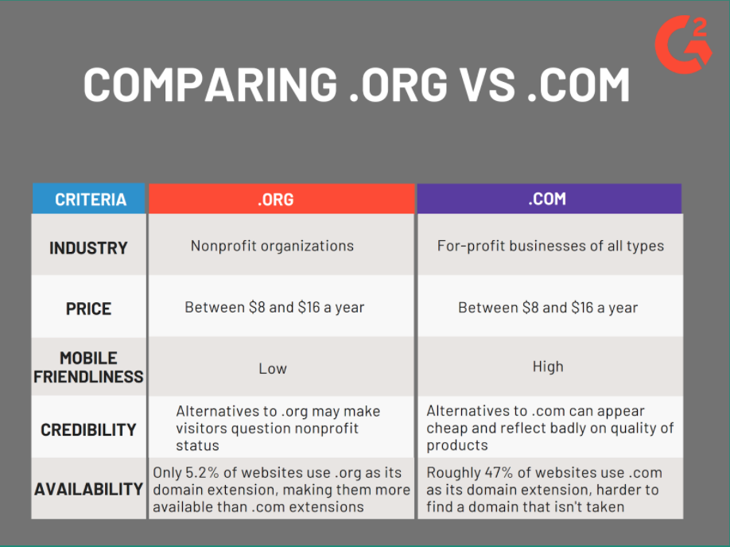

How to find a reliable site
Reliability is tricky to find in this day and age. Even the most academic sites can have a biased view.
According to UTEP CONNECT, the 4 following steps are ways to discern if a site is reliable:
Step One: Check the domain name
 Sites that end with “.com” are commercial sites and tend to be less reliable. However, sites that end with “.edu”, “.org”, or “.gov”, are institutional sites and have a more reliable background.
Step Two: Take a closer look at the source


Check if the source has a bibliography or cites other authors. Check the credentials of the author or authors to see if they are a professional in the topic. If nothing comes up for either or both of these questions, then the site probably has an unreliable narrator.
Step Three: Search for additional background for what you’ve found


Take everything you see online with a grain of salt. Don’t be afraid to search different perspectives and to double check if any information you’ve seen is accurate. If you search for additional sources and there are no other places featuring the topic or only places that seem unreliable, then the said source may be unreliable as well
Step Four: Use Certain sites to only jump-start additional research


While the internet is full of many great sites with vast information, many can be corrupted. Sites like Wikipedia should NOT be the source for research but rather a way to look for more, since this site can be altered by any user.